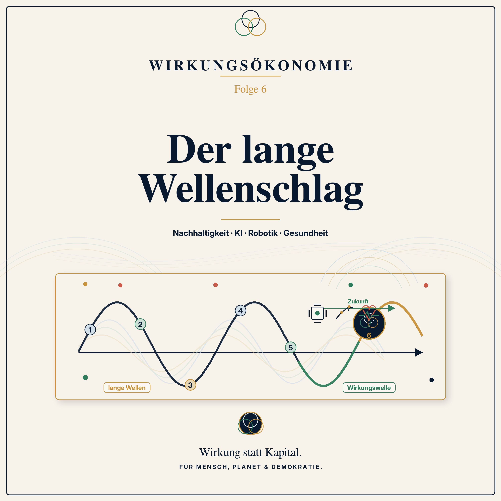

Podcast · Folge 6 · 22. Juni 2026 · 25:54
Der lange Wellenschlag
Nachhaltigkeit, KI, Robotik und Gesundheit

 Wirkungsökonomie
Wirkungsökonomie
Podcast · Folge 6 · 22. Juni 2026 · 25:54
Nachhaltigkeit, KI, Robotik und Gesundheit

Anhören
Manche Veränderungen kommen nicht plötzlich. Sie bauen sich auf - langsam, tief und über viele Jahre.
In Folge 6 der Podcast-Reihe zur Wirkungsökonomie geht es um die großen Wellen der wirtschaftlichen Entwicklung. Um Erfindungen, Technologien und gesellschaftliche Umbrüche, die nicht nur einzelne Branchen verändern, sondern ganze Epochen prägen.
Die Dampfmaschine veränderte die Welt. Elektrizität veränderte die Welt. Das Auto, die Chemie, der Computer und das Internet veränderten die Welt.
Und heute stehen wir wieder an so einem Punkt: Nachhaltigkeit, künstliche Intelligenz, Robotik, Gesundheit, Pflege, Resilienz und neue Energieformen treffen gleichzeitig aufeinander. Die Frage ist nicht mehr, ob sich unsere Wirtschaft verändert. Die Frage ist: Nach welchem Kompass verändert sie sich?
Diese Folge erklärt die Idee langer Transformationswellen - auch bekannt als Kondratieff-Wellen - nicht als starres Naturgesetz, sondern als hilfreiches Bild: Wirtschaft entwickelt sich oft in großen Schüben. Neue Technologien entstehen, alte Strukturen geraten unter Druck, neue Märkte, Berufe und Lebensweisen bilden sich heraus.
Doch diesmal reicht Technologie allein nicht aus.
Denn KI kann helfen - oder manipulieren. Robotik kann Menschen entlasten - oder soziale Spaltung verstärken. Gesundheit kann präventiv gedacht werden - oder weiter an Krankheit verdienen. Nachhaltigkeit kann echte Systemarchitektur werden - oder bloß ein grüner Zusatz bleiben.
Genau hier setzt die Wirkungsökonomie an. Sie sagt: Die nächste große Welle braucht einen neuen Maßstab. Nicht Kapital, Wachstum oder Geschwindigkeit entscheiden, ob Fortschritt wirklich Fortschritt ist. Entscheidend ist die Wirkung auf Mensch, Planet und Demokratie.
Diese Folge ist die Brücke zwischen den Grundlagen der ersten fünf Folgen und dem nächsten großen Schritt: Der Apfel war nur der Anfang. Wirkung betrifft nicht nur Produkte. Wirkung betrifft die ganze Gesellschaft.
Merksatz der Folge: Technologie zeigt, was möglich ist. Wirkung zeigt, ob es richtig ist.
Verknüpfungen
Transkript
Das Transkript macht die Folge auch als Text zugänglich und verknüpft zentrale Begriffe mit dem Glossar.
Stell dir vor, du stehst an einem Deich.
Vor dir liegt das Meer. Erst ist es weit draußen. Der Sand ist noch trocken. Ein paar Möwen laufen herum. Alles wirkt ruhig.
Und dann, ganz langsam, kommt das Wasser zurück.
Nicht als eine einzige große Wand. Nicht wie im Katastrophenfilm. Sondern als Bewegung, die man am Anfang fast übersehen kann. Ein dünner Film Wasser. Dann eine Pfütze. Dann ein Rinnsal. Dann viele kleine Rinnen. Und irgendwann merkst du: Das ist nicht mehr dieselbe Landschaft.
Das Meer fragt nicht, ob du heute Zeit hast. Es fragt nicht, ob du bereit bist. Die Flut kommt einfach.
Und jetzt kann man zwei Dinge tun. Man kann so tun, als wäre nichts. Man kann die Strandkörbe stehen lassen, die Schuhe im Sand vergessen und sagen: Ach, wird schon nicht so schlimm.
Oder man kann die Gezeiten kennen. Man kann wissen, wo der Deich steht. Man kann die Schiffe richtig vertäuen. Man kann den Hafen so bauen, dass er mit der Bewegung umgehen kann.
Wirtschaft bewegt sich manchmal ähnlich.
Nicht jeden Tag. Nicht jede Woche. Aber über lange Zeiträume hinweg kommen große Wellen. Sie verändern, wie wir arbeiten. Wie wir wohnen. Wie wir reisen. Wie wir kommunizieren. Wie wir gesund bleiben. Wie wir Energie erzeugen. Und manchmal auch, wie wir uns selbst als Gesellschaft verstehen.
Heute geht es um so eine Welle.
Um den langen Wellenschlag der Wirtschaft.
Und um die Frage, ob die nächste große Transformation uns trägt - oder überrollt.
Willkommen zur sechsten Folge der Podcast-Reihe zur Wirkungsökonomie.
Ich bin Natalie Weber, und in dieser Folge machen wir etwas, das in einer Podcast-Reihe sehr wichtig ist: Wir zoomen heraus.
In den ersten Folgen haben wir sehr nah hingeschaut. Auf einen Apfel. Auf ein Preisschild. Auf die Frage, was Leistung eigentlich ist. Auf den Unterschied zwischen Absicht und Wirkung. Und zuletzt darauf, wie man Wirkung sichtbar machen kann: mit WÖk-IDs, Scorecards, Datenqualität und der Reverse Merit Order.
Heute fragen wir: Warum ist das alles gerade jetzt wichtig?
Warum reicht es nicht, zu sagen: Schönes Konzept, vielleicht irgendwann? Warum braucht unsere Zeit genau jetzt einen neuen Kompass?
Die Antwort dieser Folge lautet: Weil wir nicht in einer normalen kleinen Reformphase leben. Wir leben in einer großen Umbruchphase.
Nachhaltigkeit, künstliche Intelligenz, Robotik, Gesundheit, Pflege, Klima, Energie, Daten, Lieferketten, Demokratie, Wahrheit - all das verändert sich gleichzeitig. Und wenn sich so viele Dinge gleichzeitig bewegen, dann reicht es nicht, einzelne Löcher zu stopfen.
Dann braucht man eine Steuerungslogik.
Und genau hier bekommt die Wirkungsökonomie ihren historischen Ort.
Lass uns kurz zurückgehen.
Folge 1: Zwei Äpfel, ein Preis. Wir haben gesehen: Ein Preisschild erzählt oft nur, was wir an der Kasse bezahlen. Nicht, wer sonst noch bezahlt. Nicht der Boden. Nicht das Wasser. Nicht das Klima. Nicht die Menschen in der Lieferkette. Nicht die Zukunft.
Folge 2: Der falsche Kompass. Wir haben gesagt: Kapital ist nicht böse. Kapital ist ein Werkzeug. Aber wenn das Werkzeug zum Kompass wird, dann steuern wir in die falsche Richtung.
Folge 3: Nicht alles, was sich bewegt, leistet etwas. Wir haben die Physik als Bild genommen: Es gibt Scheinleistung, Blindleistung, Verlustleistung und Wirkleistung. Auch Wirtschaft kann sehr beschäftigt sein und trotzdem wenig Zukunft erzeugen.
Folge 4: Wirkung ist nicht Absicht. Gut gemeint ist nicht automatisch gut gemacht. Wirkung ist nicht das, was wir wollen. Wirkung ist das, was sich tatsächlich verändert.
Folge 5: Wie misst man etwas, das man nicht sieht? Wir haben gesehen: Wirkungsmessung darf kein Schönrechnen werden. Man braucht Daten, aber auch Demut. Man braucht Scorecards, aber auch rote Linien. Und das schwächste Feld entscheidet.
Jetzt sind wir bereit für die nächste Frage.
Wenn wir Wirkung verstehen und sichtbar machen können: In welchem historischen Moment befinden wir uns eigentlich?
Habt ihr euch schon einmal gefragt, warum manche Zeiten plötzlich anders werden?
Es gibt Jahre, da scheint sich wenig zu verändern. Man bekommt ein neues Auto, aber es fährt immer noch auf der Straße. Man bekommt ein neues Handy, aber es ist im Grunde noch ein Telefon mit Bildschirm. Man bekommt eine neue Waschmaschine, aber sie wäscht immer noch Wäsche.
Und dann gibt es Phasen, in denen sich nicht nur einzelne Dinge ändern, sondern das ganze Spielfeld.
Als die Eisenbahn kam, ging es nicht nur um schnellere Pferde. Städte veränderten sich. Handel veränderte sich. Zeit veränderte sich. Menschen konnten plötzlich woanders arbeiten, Waren konnten weiter reisen, Regionen wurden verbunden.
Als Elektrizität sich verbreitete, ging es nicht nur um hellere Lampen. Fabriken konnten anders arbeiten. Haushalte veränderten sich. Kommunikation veränderte sich. Später kamen Radio, Telefon, Maschinen, Massenproduktion.
Als das Auto zum Massenprodukt wurde, ging es nicht nur um Mobilität. Städte wurden für Autos gebaut. Vororte entstanden. Tankstellen, Autobahnen, Logistik, Ölpolitik, Werbung, Konsumkultur - alles hing plötzlich mit daran.
Und als Computer und Internet kamen, ging es nicht nur um bessere Schreibmaschinen. Arbeit, Handel, Banken, Medien, Wissen, Freundschaften, Öffentlichkeit - alles wurde digitaler, schneller, vernetzter.
Manchmal ist eine Innovation also nicht einfach ein neues Ding. Sie ist wie ein Stein, der ins Wasser fällt. Der Stein ist klein. Aber die Wellen laufen weit.
Für solche langen Bewegungen gibt es in der Wirtschaftsgeschichte ein Denkbild: die sogenannten Kondratieff-Wellen.
Der Name kommt von Nikolai Kondratieff, einem Ökonomen, der sich gefragt hat, warum Wirtschaftsentwicklung nicht gleichmäßig verläuft, sondern in langen Auf- und Umbruchphasen.
Wichtig ist: Diese Wellen sind kein Naturgesetz. Sie sind kein Fahrplan wie ein Zugfahrplan. Niemand kann sagen: Am Dienstag um 9:14 Uhr beginnt die nächste Welle.
Kondratieff-Wellen sind eher eine Landkarte. Und wie jede Landkarte vereinfachen sie. Aber sie helfen uns, Muster zu sehen.
Das Muster lautet ungefähr: Eine neue Basisinnovation entsteht. Am Anfang ist sie klein. Dann wird sie billiger, besser, breiter nutzbar. Sie verändert Branchen. Dann verändert sie Infrastruktur. Dann verändert sie Berufe, Kapitalflüsse, Bildung, Politik, Lebensweise.
Irgendwann ist die alte Ordnung erschöpft. Alte Geschäftsmodelle tragen nicht mehr. Alte Kennzahlen sehen noch gut aus, aber die Wirklichkeit passt nicht mehr dazu. Und dann braucht es eine neue Leitlogik.
Man könnte auch sagen: Eine neue Welle braucht nicht nur neue Maschinen. Sie braucht neue Regeln.
Schauen wir einmal ganz grob zurück.
Die ersten großen Industriewellen wurden von Dampf, Mechanisierung, Kohle, Eisenbahn und Stahl getragen. Die Leitfrage war: Wie produzieren wir mehr? Wie bewegen wir Güter schneller? Wie senken wir Kosten?
Das war nicht klein. Das war riesig. Fabriken entstanden. Städte wuchsen. Arbeit wurde neu organisiert. Menschen zogen vom Land in Industriezentren. Wohlstand wuchs - aber auch Ausbeutung, Verschmutzung, Klassenkonflikte.
Dann kamen Elektrizität, Chemie, Massenproduktion, später das Auto, Öl und Konsumgesellschaft. Die Leitfrage verschob sich: Wie schaffen wir Nutzen für Massenmärkte? Wie bringen wir Produkte in jeden Haushalt? Wie machen wir Konsum bequem?
Auch das brachte viel: Kühlschränke, Waschmaschinen, Mobilität, Licht, medizinische Fortschritte, neue Industrien. Aber es brachte auch neue Nebenwirkungen: Abhängigkeit von fossilen Energien, Wegwerfproduktion, Flächenverbrauch, Luftverschmutzung, Wachstum ohne Grenzen.
Dann kam die digitale Welle: Computer, Internet, Telekommunikation, Daten, Plattformen, globale Lieferketten. Die Leitfrage wurde: Wie optimieren wir Ressourcen, Prozesse, Information, Geschwindigkeit? Wie machen wir alles effizienter?
Und wieder entstand viel Gutes: Wissen wurde zugänglicher, Kommunikation schneller, Prozesse effizienter, neue Geschäftsmodelle möglich. Aber auch hier gab es Schattenseiten: Datenmacht, Plattformabhängigkeit, Beschleunigung, Desinformation, globale Lieferketten, die sehr effizient aussahen - aber manchmal gar nicht resilient waren.
Das ist wichtig: Jede Welle bringt Möglichkeiten. Aber jede Welle bringt auch Nebenwirkungen. Technik allein entscheidet nicht, ob eine Welle gut wird. Der Maßstab entscheidet.
Die digitale Welle hat uns einen besonderen Gedanken beigebracht: Effizienz.
Daten sollten Prozesse verbessern. Lieferketten sollten schlanker werden. Lagerbestände sollten sinken. Maschinen sollten optimal ausgelastet sein. Werbung sollte genau die richtigen Menschen erreichen. Finanzmärkte sollten schneller reagieren. Unternehmen sollten weniger Ressourcen einsetzen und mehr Output erzeugen.
Das klingt erst einmal gut.
Aber Effizienz hat eine Tücke. Effizienz fragt nicht automatisch: Wofür?
Ein sehr effizientes Fast-Fashion-System kann Kleidung schneller und billiger produzieren - und gleichzeitig Wasser, Arbeit und Klima belasten.
Eine sehr effiziente Plattform kann Aufmerksamkeit perfekt verteilen - und gleichzeitig Wut, Sucht und Polarisierung verstärken.
Eine sehr effiziente Lieferkette kann Lagerkosten sparen - und bei der ersten Krise reißen.
Ein sehr effizienter Algorithmus kann Menschen schneller bewerten - und dabei Vorurteile automatisieren.
Effizienz ist also nicht falsch. Aber Effizienz ohne Richtung ist gefährlich.
Sie ist wie ein sehr guter Motor ohne Lenkrad. Man kommt schneller voran. Aber wohin?
Und genau hier beginnt die nächste Welle.
Wenn wir heute über die nächste lange Transformationswelle sprechen, dann geht es nicht um eine einzige Erfindung.
Es geht nicht nur um künstliche Intelligenz. Nicht nur um Robotik. Nicht nur um erneuerbare Energien. Nicht nur um Gesundheit. Nicht nur um Kreislaufwirtschaft. Nicht nur um Pflege. Nicht nur um Klima.
Es geht darum, dass all diese Felder gleichzeitig unter Druck geraten und sich gegenseitig verstärken.
Erstens: Der Planet setzt Grenzen. Klima, Wasser, Böden, Biodiversität, Ressourcen - das sind keine grünen Nebenthemen. Das sind Betriebsbedingungen unserer Zivilisation.
Zweitens: Gesundheit wird zur großen Systemfrage. Nicht nur Krankenhaus und Medikamente. Sondern Prävention, Pflege, Ernährung, psychische Gesundheit, Hitzeschutz, saubere Luft, Einsamkeit, Stadtplanung, gute Arbeit.
Drittens: Künstliche Intelligenz und Robotik verändern Arbeit, Wissen, Produktion, Diagnostik, Verwaltung, Bildung und vielleicht sogar unser Verständnis von Leistung.
Viertens: Demokratie und Vertrauen geraten unter Druck. Wenn Menschen nicht mehr wissen, was wahr ist, wenn Institutionen an Glaubwürdigkeit verlieren, wenn Plattformen Erregung belohnen, dann wird jede Transformation schwerer.
Diese vier Bewegungen gehören zusammen.
Der sechste Wellenschlag ist deshalb nicht einfach: Wir bauen mehr grüne Technik.
Er lautet: Wir müssen lernen, komplexe Systeme so zu gestalten, dass sie Mensch, Planet und Demokratie stabilisieren.
Das ist der Unterschied.
Manchmal klingt Transformation wie eine politische Entscheidung: Wollen wir sie oder wollen wir sie nicht?
Aber so einfach ist es nicht.
Die Klimakrise fragt nicht, ob ein Land gerade Lust auf Transformation hat. Hitze, Dürren, Starkregen und Ernteausfälle warten nicht auf die nächste Ausschusssitzung.
Künstliche Intelligenz wartet auch nicht, bis wir alle Grundsatzdebatten beendet haben. Sie wird entwickelt, eingesetzt, verkauft, kopiert, verbessert.
Robotik wartet nicht, bis unser Rentensystem verstanden hat, was passiert, wenn Produktivität nicht mehr an menschliche Arbeitszeit gekoppelt ist.
Gesundheitssysteme warten nicht, bis wir Prävention ernst nehmen. Wenn wir nicht vorsorgen, zahlen wir später für Krankheit, Pflegekrisen und Erschöpfung.
Und Demokratie wartet nicht, bis wir verstanden haben, dass Wahrheit eine Infrastruktur ist. Wenn öffentliche Räume kippen, wird Vertrauen nicht automatisch wieder aufgebaut.
Die große Transformation kommt also nicht, weil ein Konzept sie ausruft.
Sie kommt, weil die alte Logik an Grenzen stößt.
Die eigentliche Frage lautet nicht: Transformation, ja oder nein?
Die eigentliche Frage lautet: Blind oder gesteuert? Kapitalgetrieben oder wirkungsorientiert? Kurzfristig profitabel oder langfristig tragfähig?
Nehmen wir ein paar einfache Beispiele.
Beispiel Wärmepumpe. Eine Wärmepumpe kann eine gute Lösung sein. Aber wenn sie in ein unsaniertes Haus eingebaut wird, wenn Mieterinnen und Mieter am Ende höhere Kosten tragen, wenn Handwerker fehlen, wenn Stromnetze nicht vorbereitet sind, dann kann eine gute Technik schlechte soziale Wirkung erzeugen.
Dann entsteht nicht Transformation, sondern Widerstand.
Beispiel künstliche Intelligenz im Krankenhaus. KI kann Ärztinnen entlasten, Diagnosen verbessern, Verwaltung reduzieren. Aber sie kann auch Kontrollsysteme verschärfen, Datenrisiken erhöhen oder Entscheidungen treffen, die niemand mehr versteht.
Dann entsteht nicht bessere Gesundheit, sondern neues Misstrauen.
Beispiel Robotik in der Pflege. Roboter können Menschen körperlich entlasten. Sie können schwere Hebetätigkeiten übernehmen, Wege verkürzen, Routineaufgaben abnehmen. Aber wenn sie eingesetzt werden, um menschliche Nähe zu ersetzen, wird Pflege vielleicht billiger - aber nicht menschlicher.
Dann entsteht technische Effizienz, aber schlechte Wirkung.
Beispiel Solarenergie. Solarstrom kann Emissionen senken. Aber wenn Rohstoffe unter schlechten Bedingungen gewonnen werden, wenn Lieferketten abhängig machen, wenn Flächenkonflikte nicht gut gelöst werden, dann trägt eine richtige Richtung neue Risiken in sich.
Das heißt nicht: keine Wärmepumpen. Keine KI. Keine Robotik. Keine Solarenergie.
Es heißt: Technik ist nicht automatisch Wirkung.
Technik ist ein Wirkstoff mit Potenzial. Ob daraus positive Wirkung wird, hängt vom System ab, in dem sie eingesetzt wird.
Und jetzt kommt der entscheidende Punkt.
Die Wirkungsökonomie ist nicht die Welle selbst.
Sie ist nicht die Wärmepumpe. Nicht der Roboter. Nicht die KI. Nicht das Solarpanel. Nicht der digitale Produktpass. Nicht das Gesundheitsprogramm.
Die Wirkungsökonomie ist eher das Ruder.
Oder noch besser: Sie ist die Seekarte, der Kompass und das Rückmeldesystem zusammen.
Sie fragt bei jeder neuen Lösung: Was verändert sich tatsächlich?
Wird Gesundheit verbessert - oder nur Behandlung verkauft?
Werden Ressourcen geschont - oder nur Schäden verlagert?
Wird Arbeit erleichtert - oder Menschen werden aus Verantwortung und Einkommen herausgedrückt?
Wird Demokratie gestärkt - oder entstehen neue Machtkonzentrationen?
Wird Resilienz aufgebaut - oder optimieren wir wieder nur für den Normalfall?
Und dann bleibt die Antwort nicht im Bericht stehen.
Wenn eine Lösung positive Netto-Wirkung erzeugt, muss sie leichter werden: leichter finanzierbar, leichter beschaffbar, steuerlich begünstigt, politisch bevorzugt, gesellschaftlich sichtbar.
Wenn eine Lösung negative Wirkung erzeugt, muss sie teurer, riskanter oder begrenzter werden.
Das ist keine Planwirtschaft. Es ist eine bessere Rückkopplung.
Der Markt sucht weiter. Unternehmen entwickeln weiter. Menschen entscheiden weiter. Aber die Signale werden ehrlicher.
In früheren Wellen ging es stark um Kosten. Wer billiger produzieren konnte, gewann.
Dann ging es stärker um Kundennutzen. Wer besser verstand, was Menschen kaufen wollten, gewann.
Dann ging es um Effizienz. Wer Daten, Prozesse, Logistik und Ressourcen besser optimierte, gewann.
Die nächste Welle braucht eine neue Leitfrage: Wer erzeugt mit seinen Lösungen die beste positive Wirkung?
Nicht Wirkung als Werbewort.
Nicht Wirkung als Hochglanzbericht.
Nicht Wirkung als Bauchgefühl.
Sondern Wirkung als tatsächliche Veränderung von Zuständen - gemessen, bewertet, rückgekoppelt.
Man könnte sagen: Früher gewann, wer Ressourcen effizient nutzte. Heute muss gewinnen, wer positive Wirkung effizient erzeugt.
Das ist eine enorme Verschiebung.
Denn dann ist ein Unternehmen nicht mehr nur erfolgreich, weil es viel verkauft. Es ist erfolgreich, wenn seine Produkte Probleme lösen, ohne an anderer Stelle neue große Probleme zu bauen.
Dann ist Kapital nicht mehr erfolgreich, weil es schnell wächst. Es ist erfolgreich, wenn es Zukunftsfähigkeit finanziert.
Dann ist ein Staat nicht erfolgreich, weil er viel Geld ausgibt. Er ist erfolgreich, wenn öffentliche Mittel tatsächlich Zustände verbessern.
Und dann ist Technik nicht erfolgreich, weil sie neu ist. Sie ist erfolgreich, wenn sie Mensch, Planet und Demokratie stärkt.
Vielleicht hilft dieses Bild.
Stell dir ein Auto vor.
Künstliche Intelligenz ist ein sehr starker Motor. Robotik ist ein sehr starker Antrieb. Nachhaltigkeitstechnologien sind vielleicht ein neuer Treibstoff. Gesundheitsinnovationen sind bessere Sensoren. Daten sind das Armaturenbrett.
Aber wenn wir nicht wissen, wohin wir fahren, wenn das Lenkrad wackelt, wenn die Bremse fehlt und wenn der Tacho lügt, dann ist ein stärkerer Motor nicht automatisch eine gute Nachricht.
Die Wirkungsökonomie baut nicht den Motor. Sie klärt, wohin das Fahrzeug fahren soll, was es unterwegs beschädigt, wann es zu schnell wird und welche Strecke langfristig tragfähig ist.
Sie fragt nicht: Können wir?
Sie fragt: Was bewirken wir, wenn wir können?
Das ist der Unterschied zwischen Fortschrittsbegeisterung und Zukunftsfähigkeit.
Jetzt wird es politisch - aber nicht kompliziert.
Wenn die sechste Welle sowieso kommt, dann muss Politik nicht so tun, als könnte sie jeden technologischen Wandel bis ins Detail planen.
Aber Politik muss die Leitplanken setzen.
Erstens: Wir brauchen wirkungsorientierte Innovationsförderung. Also nicht nur Geld für das Neueste, sondern für das, was Mensch, Planet und Demokratie nachweisbar stärkt.
Zweitens: Wir brauchen öffentliche Beschaffung als Hebel. Wenn Schulen, Krankenhäuser, Kommunen, Behörden und öffentliche Unternehmen einkaufen, dann dürfen sie nicht nur den billigsten Preis sehen. Sie müssen Wirkung sehen.
Drittens: Wir brauchen Wirkungsdatenräume. Keine Überwachung. Keine Personenbewertung. Sondern saubere Daten darüber, wie Produkte, Technologien, Lieferketten, Gebäude, Energie und Dienstleistungen wirken.
Viertens: Wir brauchen Übergänge, die sozial tragen. Eine Transformation, die Menschen abstürzen lässt, wird politisch scheitern. Wenn Robotik und KI Produktivität erhöhen, müssen Einkommen, Qualifizierung, Care-Arbeit und Teilhabe neu gedacht werden. Das vertiefen wir später in Folge 12.
Fünftens: Wir brauchen Resilienz als Kriterium. Nicht nur effizient im Normalbetrieb. Sondern tragfähig bei Hitzewellen, Energiekrisen, Lieferkettenbrüchen, Pflegeengpässen, Cyberangriffen und Desinformation.
Das klingt groß. Aber es beginnt sehr konkret.
Mit Pilotbranchen. Mit Kommunen. Mit Schulkantinen. Mit Gebäuden. Mit Gesundheitseinrichtungen. Mit öffentlicher Beschaffung. Mit Unternehmen, die ihre Daten nicht nur berichten, sondern in Entscheidungen zurückführen.
Transformation wird nicht dadurch gut, dass man sie groß ankündigt.
Sie wird gut, wenn Rückkopplungen stimmen.
Es ist wichtig, das klar zu sagen: Die Wirkungsökonomie ist keine Technikreligion.
Sie sagt nicht: KI löst alles. Robotik löst alles. Grüne Technologie löst alles. Märkte lösen alles. Der Staat löst alles.
Sie sagt: Alles wirkt. Und deshalb muss alles rückgekoppelt werden.
Eine KI kann großartige Wirkung haben. Oder schlechte Wirkung verstärken.
Ein Solarpanel kann Teil einer guten Energiewende sein. Oder Teil einer problematischen Lieferkette.
Ein Gesundheitsprogramm kann Prävention stärken. Oder nur neue Abrechnungslogiken erzeugen.
Ein nachhaltiges Produkt kann wirklich besser sein. Oder es kann ein Etikett sein, das über schlechte Wirkung hinwegtäuscht.
Deshalb braucht die sechste Welle nicht nur Innovation.
Sie braucht Wahrheit über Wirkung.
Und genau da ist die Wirkungsökonomie streng: Sie fragt nicht, was modern klingt. Sie fragt, was sich verbessert.
Eine Welle hat Kraft.
Aber Kraft allein ist noch keine Richtung.
Die Industrialisierung hatte Kraft. Sie hat Wohlstand geschaffen, aber auch Ausbeutung, Kohleabhängigkeit und Naturzerstörung.
Die Massenproduktion hatte Kraft. Sie hat vieles erschwinglich gemacht, aber auch Wegwerfproduktion und Überkonsum erzeugt.
Die Digitalisierung hatte Kraft. Sie hat Wissen und Verbindung gebracht, aber auch Aufmerksamkeit, Wahrheit und Daten in neue Machtfragen verwandelt.
Die nächste Welle wird auch Kraft haben.
Die Frage ist: Welche Richtung geben wir ihr?
Wenn Kapital der Kompass bleibt, sucht die Welle vor allem Rendite.
Wenn Wirkung der Kompass wird, sucht die Welle Lösungen.
Das ist vielleicht die einfachste politische Formel dieser Folge.
Die sechste Welle ist nicht automatisch gut. Aber sie kann gut gesteuert werden.
Vielleicht fragst du jetzt: Wo sehe ich diesen langen Wellenschlag, wenn ich morgen aufwache?
Du siehst ihn an der Stromrechnung. Weil Energie nicht mehr nur Energie ist, sondern Klima, Sicherheit, Kosten und geopolitische Abhängigkeit.
Du siehst ihn beim Arzttermin. Weil Gesundheit nicht mehr nur Behandlung ist, sondern Prävention, Pflege, Daten, Personal, Ernährung, Luft, Hitze und psychische Stabilität.
Du siehst ihn bei der Arbeit. Weil KI und Automatisierung manche Tätigkeiten verändern, beschleunigen oder ersetzen.
Du siehst ihn in der Schule. Weil Kinder nicht nur Fakten lernen müssen, sondern Wirkungskompetenz: Was verändert mein Handeln? Wem nützt es? Wem schadet es? Was ist wahr? Was ist nur laut?
Du siehst ihn im Supermarkt. Weil Produkte nicht mehr nur Preis und Marke haben, sondern Lieferketten, Ressourcen, Gesundheit, Arbeit und Klima in sich tragen.
Und du siehst ihn in der Demokratie. Weil jede große Transformation Vertrauen braucht. Ohne Vertrauen wird jede gute Lösung verdächtig. Ohne Wahrheit wird jede Debatte manipulierbar. Ohne Teilhabe wird jede Veränderung zum Konflikt.
Der lange Wellenschlag ist also nicht irgendwo in Lehrbüchern.
Er ist längst in unserem Alltag angekommen.
Fassen wir zusammen.
Kondratieff-Wellen sind kein Naturgesetz. Aber sie sind ein hilfreiches Bild: Wirtschaft und Gesellschaft verändern sich in langen Innovations- und Transformationsbewegungen.
Die nächste große Bewegung wird von Nachhaltigkeit, Gesundheit, künstlicher Intelligenz, Robotik, Resilienz und demokratischer Stabilität geprägt.
Diese Transformation passiert nicht irgendwann. Sie läuft schon.
Die Frage ist nicht, ob sie kommt. Die Frage ist, wie wir sie steuern.
Mit dem alten Kompass wird sie nach Kapital laufen: schnell, profitabel, ungleich, riskant und oft blind für Nebenwirkungen.
Mit dem Wirkungskompass kann sie zur neuen Ordnung des Wohlstands werden: innovativ, messbar, lernfähig, fairer und resilienter.
Der Merksatz dieser Folge lautet deshalb:
Kühlschrank-Satz
Die große Transformation kommt sowieso. Die Wirkungsökonomie entscheidet, ob sie uns trägt oder überrollt.
Und damit kommen wir in der nächsten Folge zu einem wichtigen Scharnier der ganzen Reihe.
Bis jetzt haben wir beim Apfel angefangen, den Kompass repariert, Leistung neu verstanden, Wirkung definiert, Wirkung sichtbar gemacht und den historischen Wellenschlag eingeordnet.
Jetzt müssen wir den Blick öffnen.
Denn wenn Wirkung die tatsächliche Veränderung von Zuständen ist, dann wirkt nicht nur ein Produkt.
Auch eine Wohnung wirkt. Ein Satz wirkt. Ein Gesetz wirkt. Ein Algorithmus wirkt. Ein Krankenhaus wirkt. Eine Schule wirkt. Ein Medienbeitrag wirkt. Ein Kapitalfluss wirkt.
Der Apfel war nur der Anfang.
Genau darum geht es in Folge 7.
Bis dahin: Stell dir diese Woche einmal bei einer neuen Technologie, einer politischen Maßnahme oder einem Produkt die einfache Wirkungsfrage:
Was verändert es eigentlich - und für wen?
Danke fürs Zuhören.